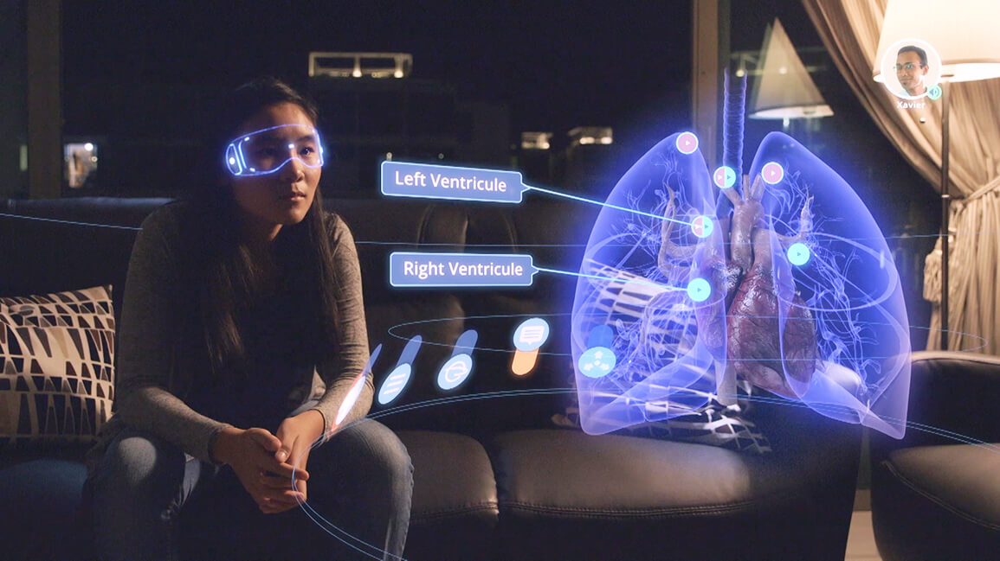
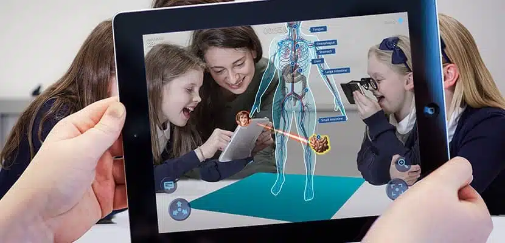
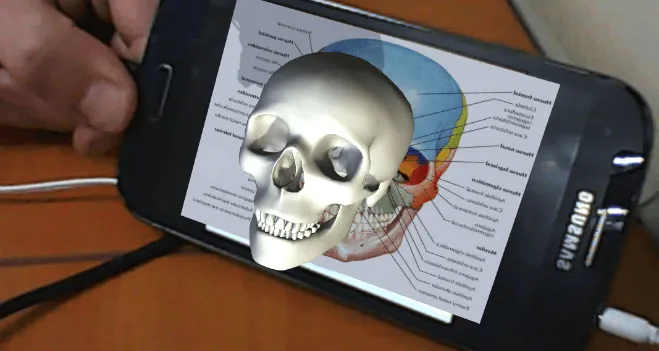

-Realidad Aumentada en Sectores Educativos-
Educación
La realidad aumentada en educación forma parte de lo que se denominan pedagogías emergentes. Estas técnicas de enseñanza se definen como aquellas ideas pedagógicas que surgen alrededor de las Tecnologías de la Información y que proponen nuevos enfoques educativos basados en la colaboración, interacción, creatividad e innovación.
El objetivo de la realidad aumentada en educación es construir entornos con un alto grado de participación e interactividad, en los que el alumno sea capaz de construir, diseñar, modificar, experimentar e involucrarse de forma mucho más activa en el proceso de aprendizaje.
En este sentido, destaca su capacidad para crear los que se denominan aulas interactivas o virtuales, las cuáles proporcionan una mayor inmersión a los alumnos y potencian su interés en las materias. A continuación profundizamos más en la relación que existe entre realidad aumentada y educación.
¿De qué forma se pueden integrar realidad aumentada y educación?
La realidad aumentada es una tecnología relativamente joven. Hace años que se emplea en el ámbito educativo, pero no hay duda de que su implementación es todavía escasa. Todavía queda mucho camino por recorrer para aprovechar esta tecnología en el aula, pero ya existen numerosas formas de integrar la realidad aumentada en la educación.
Libros de Texto
Una de las formas más habituales de integrar la realidad aumentada en educación es a través de marcadores en los libros de texto. Se suelen utilizar códigos QR que, al ser enfocados con el teléfono móvil, ofrecen hipervínculos hacia otra información complementaria.
Ventajas de usar la realidad aumentada en la educación
Ofrece una experiencia más emocional e inmersiva, lo que atrae el interés de alumnado. Gracias a esta experiencia inmersiva e interactiva, facilita el aprendizaje y la transmisión de conceptos.
Aumenta la motivación de los alumnos, al hacer las clases más amenas e interesantes. Fomenta la participación gracias a la interactividad. Rompe la tradicional monotonía de las clases gracias al uso de la tecnología, ofreciendo alicientes para aprender. Permite a los alumnos explotar las asignaturas y su realidad más cercana desde otra perspectiva. Prepara a los alumnos para la era digital.
Desventajas de usar la realidad aumentada en la educación
Sin embargo, la realidad aumentada en educación también se enfrena a una serie de inconvenientes o puntos a tener en cuenta. Los alumnos pueden caer en el aprendizaje vago. Consiste en dejar de lado el aprendizaje y la asimilación de conceptos en pos de las soluciones que proporciona la tecnología. La realidad aumentada se suele considerar como un elemento lúdico, por lo que es necesario saber cómo orientarla hacia el ámbito educativo, no hacia el mero recreo. Supone un reto para los docentes, que deben adaptarse y formarse en nuevos métodos de pedagogía emergente. Se necesita material didáctico específico y dispositivos adaptados a la realidad aumentada. Puede ser cara de implantar y es posible que algunos centros educativos no tengan presupuesto necesario y dependan de que se pongan en marcha subvenciones.
